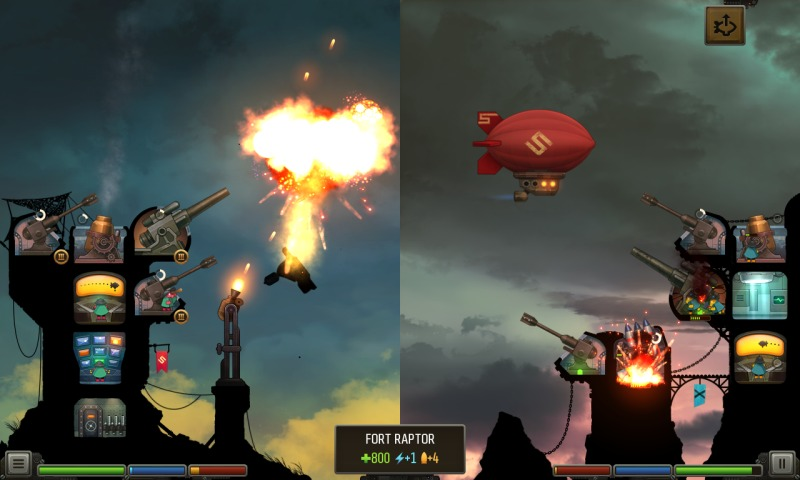
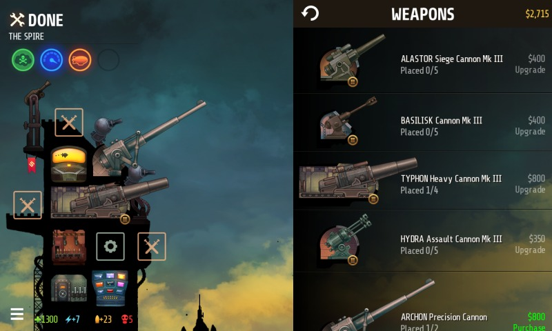
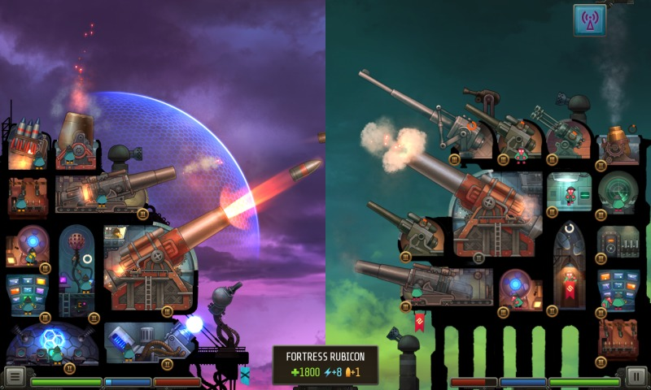
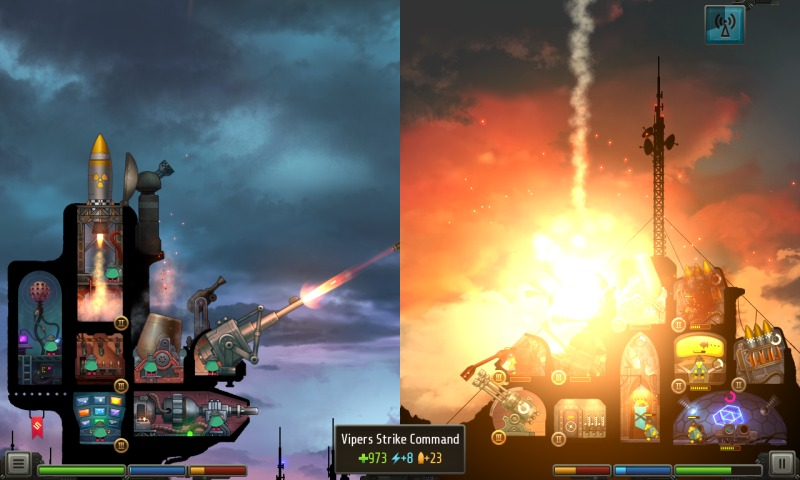
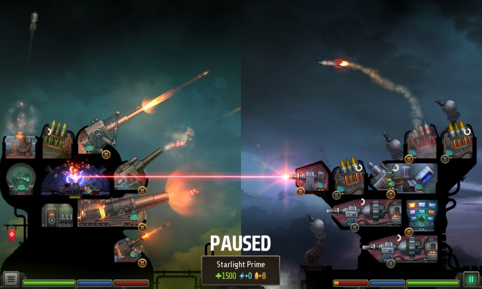
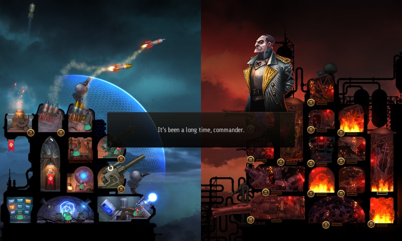

Welcome back, Strike Commander!
Command your own battle fortress! Lead the Empire State offensive against Traitor General and his foul rebellion. Assemble the mightiest artillery force and bombard your foes into oblivion!
Set in the dystopian future in which the First World War never ended, humanity knows only war and bombardment.
You are a Strike Commander, tasked by Fuhrer of the Empire State to spearhead an artillery offensive against Traitor General Kranz. You might be the one to end all wars.
Customize and manage your battle fortress. Grow and upgrade your arsenal of weapons and utility facilities, then place them in different slots of your fortress layout.
You are in command. Target your guns and command your soldiers. Active Pause allows you to freeze time and issue multiple orders simultaneously. Put out fires, repair damaged weapons and unleash orchestrated assaults on your opponent.
Get rewards for victory. Gain new fortress layouts as you conquer the rogue state of Krux, earn medals and perks to aid you in battle.





